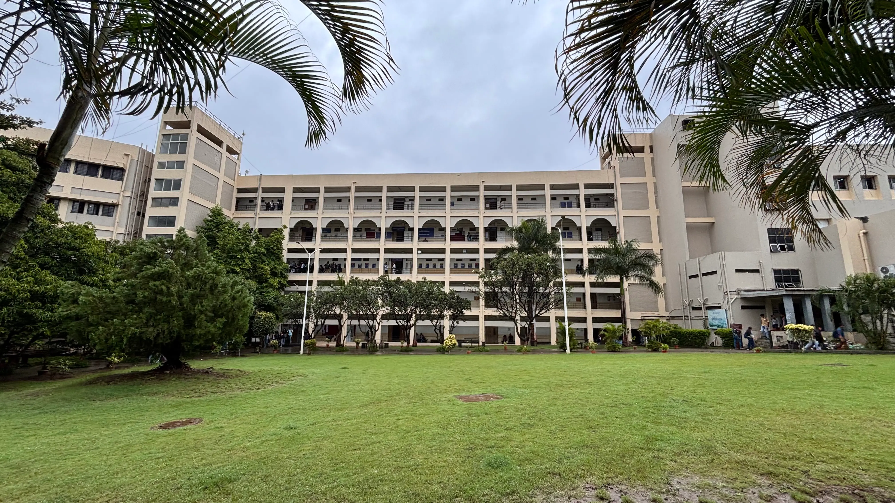
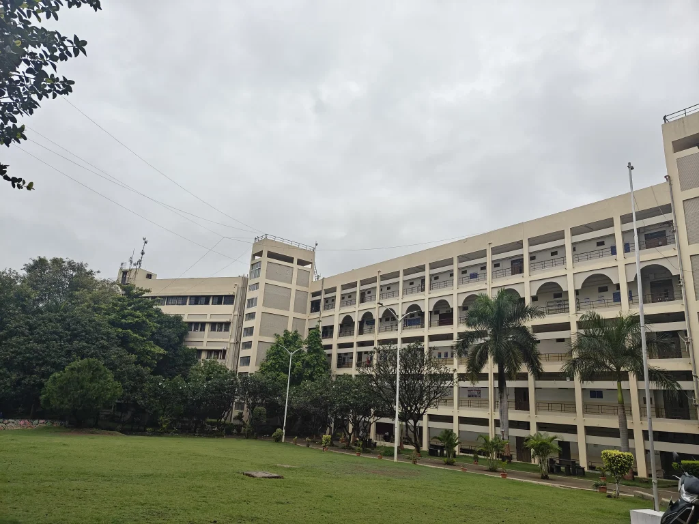
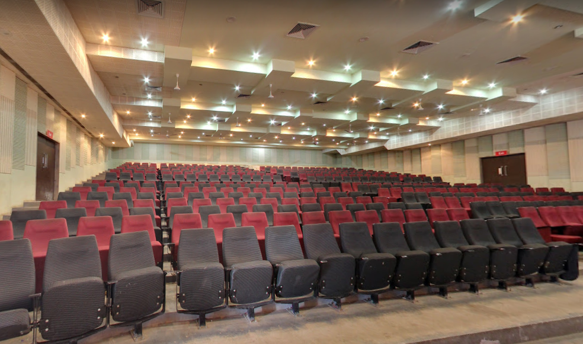

Explore Pune, Maharashtra, India — The Knowledge & Tech Capital hosting AIHASC 2027 on 25–26 March 2027.
AIHASC 2027 will be hosted in Pune, Maharashtra, India. Pune is celebrated as India's premier academic, research, and information technology capital in Western India. Renowned for its rich historic heritage as the cultural seat of the Maratha Empire, Pune is today a bustling metropolis at the forefront of AI, biotechnology, and agricultural technology.
Home to premier research bodies including the National Chemical Laboratory (NCL), Indian Institute of Science Education and Research (IISER), Savitribai Phule Pune University, and major IT parks in Hinjawadi, Pune provides an unmatched intellectual ecosystem for our international delegates.
Host Campus: BRACT's Vishwakarma Institute of Technology (VIT), Pune
666, Upper Indiranagar, Bibwewadi, Pune, Maharashtra 411037, India.
Website: www.vit.edu
| Weather in Late March | Pleasant, warm spring (20°C to 32°C / 68°F to 90°F) |
| Rainfall | Dry, clear blue skies with pleasant evenings |
| Time Zone | Indian Standard Time (IST, UTC+5:30) |
| Local Currency | Indian Rupee (INR ₹), UPI & Cards widely accepted |
| Languages | English, Marathi, Hindi |
The host institution provides cutting-edge digital infrastructure designed for international scholarly exchange.

Equipped with high-definition digital projection, surround acoustics, and dual-language streaming.

Parallel seminar halls for interactive track presentations, author slide decks, and Q&A sessions.

Dedicated visual poster presentation atriums and high-speed Wi-Fi academic lounges.
Convenient domestic and international transport links connect delegates to the conference venue.
Pune International Airport (PNQ): Located approx. 15 km from the venue. Connected directly to Dubai, Singapore, and major domestic hubs (Delhi, Mumbai, Bengaluru, Hyderabad).
Alternative: Fly into Mumbai Chhatrapati Shivaji Maharaj Intl. Airport (BOM) and take a direct expressway cab/bus (approx. 3 hours).
Pune Junction (PUNE): Located approx. 8 km from the campus. One of India's major railway hubs with direct express trains from Mumbai, Delhi, Chennai, Kolkata, and Bengaluru.
Prepaid auto-rickshaws, app cabs (Uber, Ola), and public transport are readily available at all station exits 24/7.
Pune is smoothly connected via the modern 6-lane Mumbai-Pune Expressway and National Highway NH-48.
Frequent inter-city luxury air-conditioned buses (MSRTC Shivneri, private operators) operate continuously between Mumbai and Pune.
Pune offers a wide range of delegate lodging options near the venue:
Extend your conference stay to experience Pune's rich historical landmarks: